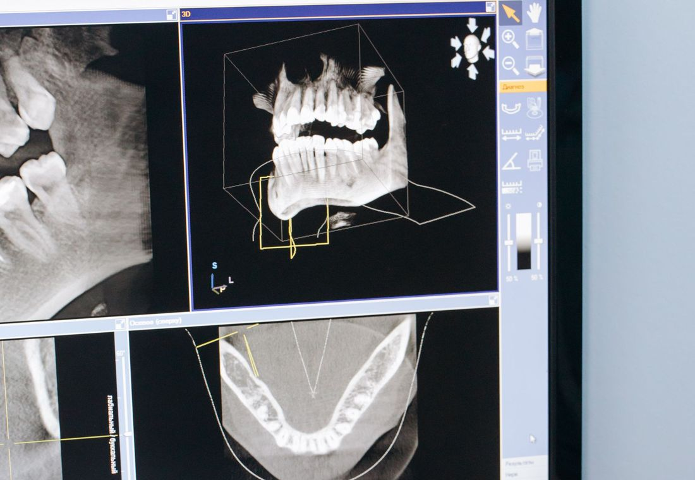
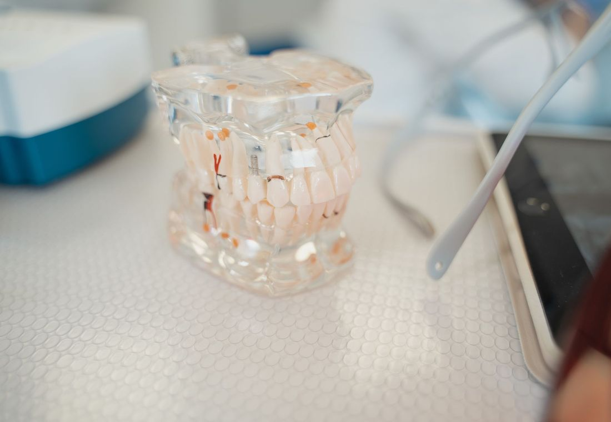
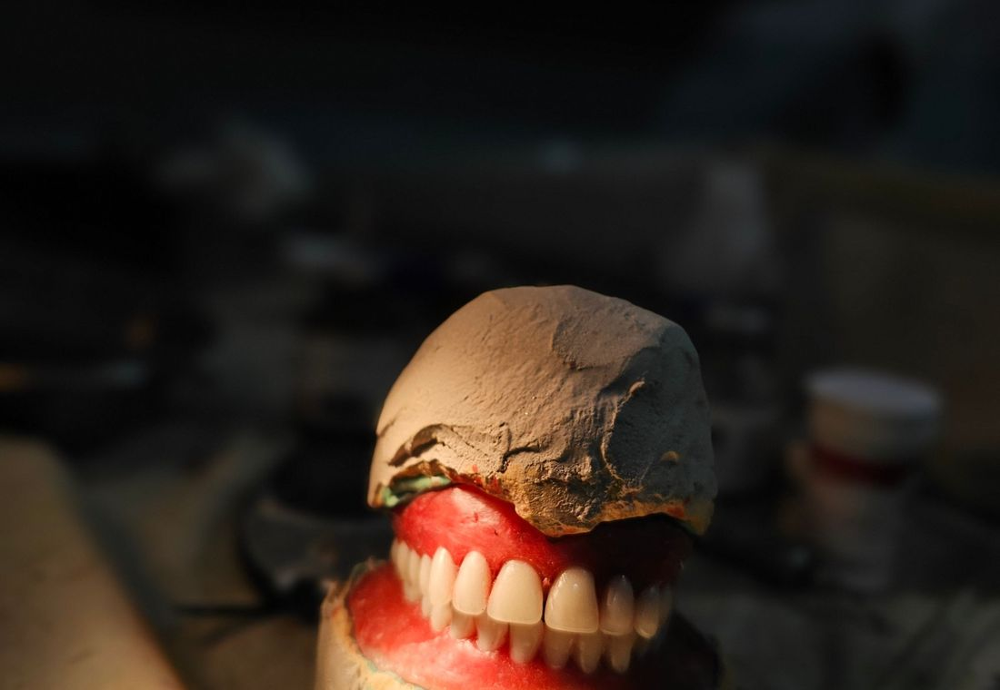
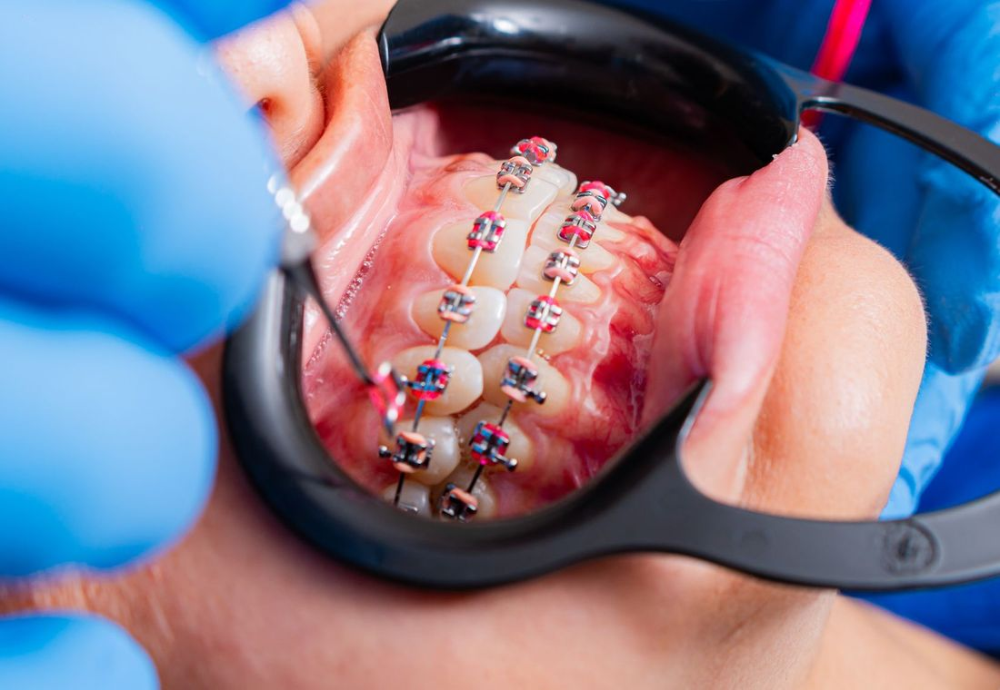
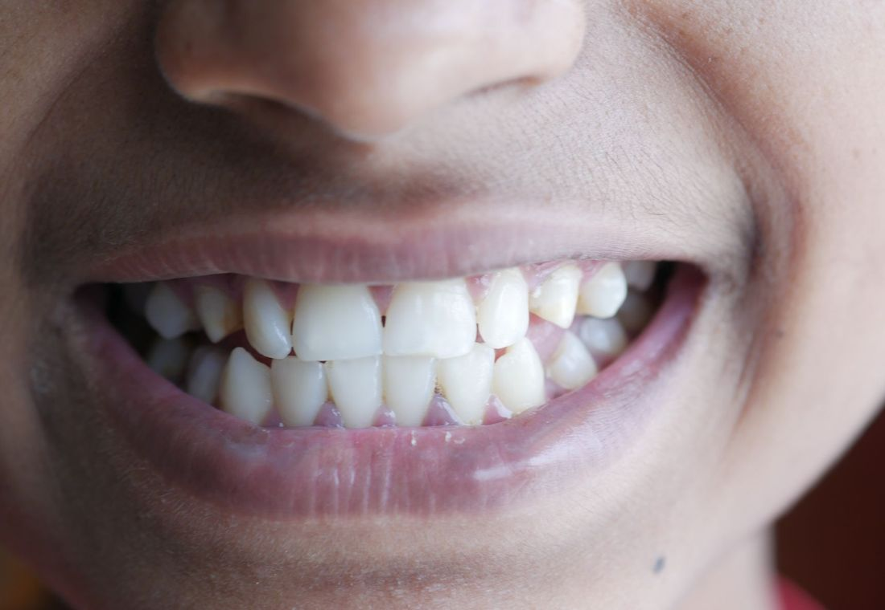
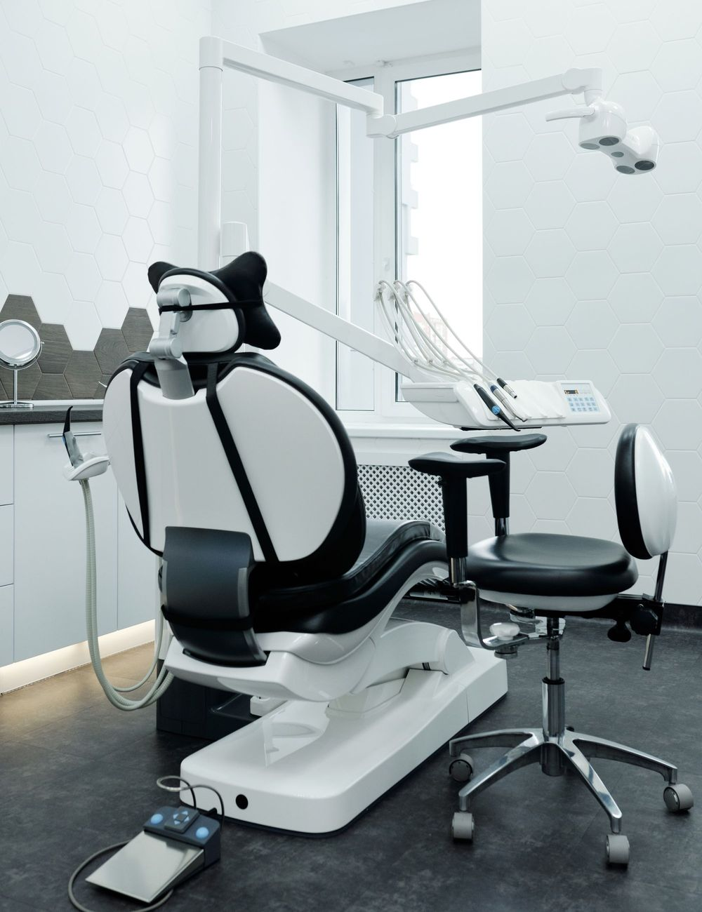
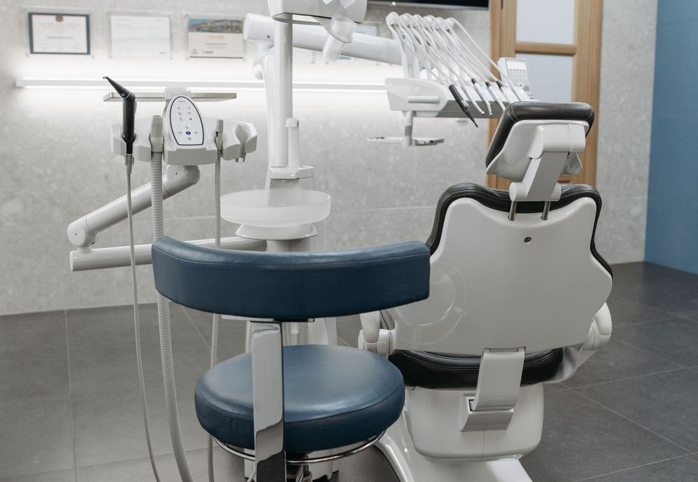
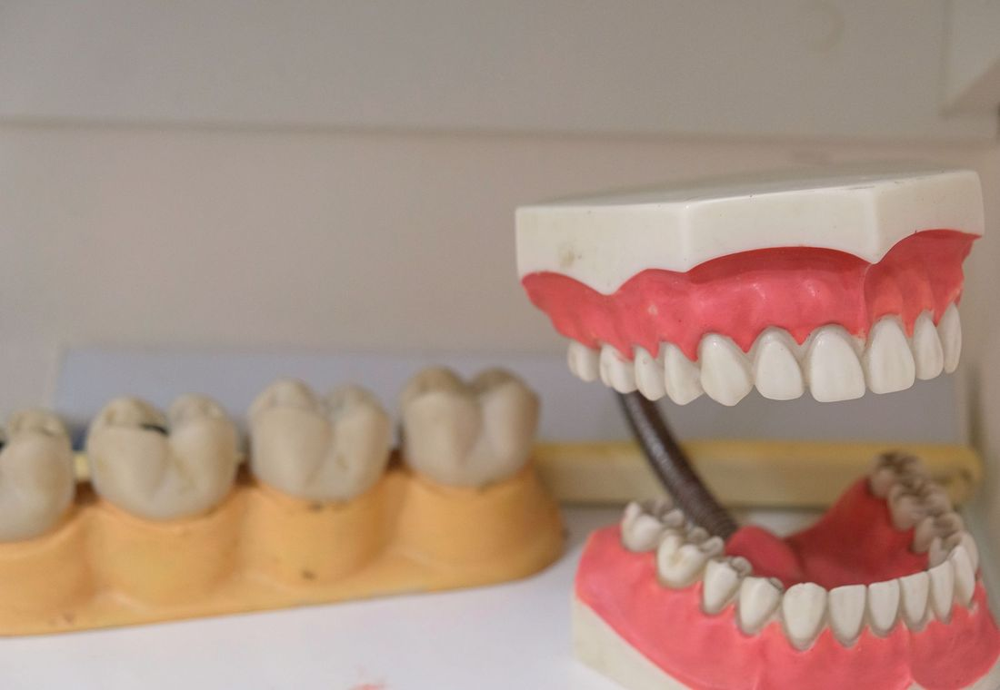

Muayene Temizlik
Temizlik

Dolgu

İmplant

Ortodonti

Estetik Çocuk
Çocuk
Buca diş kliniği, sakin ve ferah bir muayene
Dt. Güngör Çalışkan İnnalı, Buca'da ağız ve diş sağlığı için muayene, temizlik, dolgu, kanal, implant ve estetik tedavileri tek çatı altında sunar. Randevunuzu birka
RandevuŞikâyetinizi seçin, olası sebebi ve ne yapabileceğinizi görün
Konu ve şikâyet seçin.
1Konu
2Şikâyet
Randevu talebi
WhatsApp mesajı olarak Dt. Güngör Çalışkan İnnalı'ya gider.
Online randevu
Önümüzdeki günlerin uygun saat dilimlerinden birini seçin; seçiminiz hazır bir mesajla WhatsApp'tan kliniğe iletilir. Randevu, kliniğin
1Gün
2Saat
Tedavilerimiz
Dokunun, ayrıntısı açılsın.
Muayene ve panoramik röntgen
Muayenede dişler, diş eti ve çene eklemi birlikte değerlendirilir; gerekirse panoramik röntgenle gözle görülmeyen alanlar incelenir. Bu inceleme, tedavi planının dayanağıdır.
Diş taşı temizliği
Diş yüzeyinde ve diş eti çizgisinde biriken plak ile diş taşı özel aletlerle temizlenir, dişler cilalanır. Düzenli temizlik, diş eti sorunlarının önlenmesine yardımcı olur.
Dolgu
Çürüğün temizlenmesinin ardından diş, dişe uyumlu bir dolgu malzemesiyle onarılır. Hangi malzemenin uygun olduğu dişin durumuna göre muayenede belirlenir.

Kanal tedavisi
Çürük ya da travma dişin içindeki sinir dokusuna ulaştığında, tedaviyle bu doku temizlenir ve kanallar doldurulur; amaç dişi ağızda tutabilmektir. Tedavi öncesi ve sonrası röntgenle takip edilir.
İmplant
Eksik dişin yerine çene kemiğine yerleştirilen yapay kök, üzerine yapılan protezle dişin işlevini üstlenir. Kemiğin ve diş etinin uygunluğu önce muayene ve görüntülemeyle değerlendirilir.

Zirkonyum ve porselen kaplama
Kırılmış, aşınmış ya da renk ve şekil açısından rahatsız eden dişler kaplamayla yeniden şekillendirilebilir. Malzeme seçimi, dişin yeri ve çiğneme yüküne göre hekimle konuşularak yapılır.
Ortodonti: şeffaf plak ve tel
Çapraşık ya da aralıklı dişler, tel ya da şeffaf plaklarla kademeli olarak hizalanabilir. Hangi yöntemin uygun olduğu ve sürecin ne kadar süreceği ağız yapısına göre muayenede söylenir.
Diş beyazlatma
Dişlerin doğal tonunu açmak için hekim kontrolünde yapılan bir uygulamadır. Öncesinde diş ve diş eti sağlığının uygun olup olmadığına bakılır; sonuç kişiden kişiye değişir.
Çocuk diş hekimliği
Süt dişleri ve yeni çıkan kalıcı dişler için muayene, koruyucu uygulamalar ve gerekli tedaviler çocuğun yaşına uygun, sakin bir dille yapılır. Amaç, çocuğun diş hekimiyle ilk karşılaşmasını rahat geçirmesidir.
Adres ve saatler
Vali Rahmi Bey, Forbes Sk. No: 193/A, 35380 Buca/İzmir
| Pazartesi | 10:00 – 19:30 |
| Salı | 10:00 – 19:30 |
| Çarşamba | 10:00 – 19:30 |
| Perşembe | 10:00 – 19:30 |
| Cuma | 10:00 – 19:30 |
| Cumartesi | 10:00 – 16:00 |
| Pazar | Kapalı |
Sık sorulanlar
Buca'da diş kliniği randevusu nasıl alınır?
Sitedeki randevu aracından saat seçebilir, formu doldurabilir ya da doğrudan WhatsApp veya telefonla ulaşabilirsiniz. Randevu, klinik teyit ettiğinde kesinleşir.
Dt. Güngör Çalışkan İnnalı hangi saatlerde açık?
Paz–Cum 10–19:30 · Cum 10–16 · Paz Kapalı. WhatsApp'tan her zaman yazabilirsiniz; mesai içinde dönüş yapılır.
İlk muayenede neler yapılır?
Hekim şikâyetinizi dinler, dişlerinizi ve diş etinizi inceler; gerekirse panoramik röntgen ister. Ardından bulgular ve olası tedavi seçenekleri size anlatılır, kararı siz verirsiniz.
İmplant tedavisi kaç aşamadan oluşur?
Genel olarak muayene ve görüntüleme, implantın çene kemiğine yerleştirilmesi, iyileşme dönemi ve son aşamada üzerine protezin yapılması şeklinde ilerler. Süre ve aşama sayısı kişiye göre değiştiği için kesin plan muayenede söylenir.
Çocuklar diş hekimine kaç yaşında götürülmeli?
Genellikle ilk süt dişleri çıktıktan sonra, çocuk hazır olduğunda tanışma amaçlı bir muayene önerilir. Kesin zamanlama için çocuk diş hekimine danışmanız en doğrusudur.
Diş hekiminden çok korkuyorum, ne yapmalıyım?
Korkunuzu randevu öncesinde ve muayenede hekime söylemeniz yeterlidir; süreç ona göre yavaş ve adım adım ilerletilir. Rahat hissetmeniz için neyin yapılacağını önceden anlatmak da mümkündür.
Tedavi ücretleri ve taksit seçenekleri nelerdir?
Ücret, tedavinin türüne ve kapsamına göre muayeneden sonra belirlenir; kesin rakam telefonda ya da internette söylenmez. Ödeme ve taksit konusunda güncel bilgiyi klinikle görüşerek alabilirsiniz.
Hangi tedaviler yapılıyor?
Sitedeki tedavi listesi genel bilgi içindir; kliniğin hangi tedavileri yaptığı randevu öncesinde netleştirilir. Merak ettiğiniz tedaviyi WhatsApp'tan sormanız yeterli.
Buca diş kliniği: neden Dt. Güngör Çalışkan İnnalı?
Buca'da diş kliniği ararken önemli olan, hem tedavinin kalitesi hem de kendinizi rahat hissettiğiniz bir ortamdır. Dt. Güngör Çalışkan İnnalı, ağız ve diş sağlığına yönelik muayene, diş taşı temizliği, dolgu, kanal tedavisi, implant, kaplama, ortodonti ve çocuk diş hekimliği gibi tedavileri anlaşılır bir dille anlatmayı hedefler. Tedavi seçenekleri, muayene ve gerekli röntgenden sonra birlikte konuşulur.
İzmir içinde diş randevusu almak isteyenler için süreç mümkün olduğunca kolay tutulur: sitedeki randevu aracından uygun saati seçebilir, formu doldurabilir ya da WhatsApp'tan yazabilirsiniz. Diş ağrısı, diş eti kanaması, estetik beklentiler ya da çocuğunuzun ilk diş kontrolü için Buca diş kliniği arayışınızda size yardımcı olmak üzere buradayız.
Örnek tasarım, yayında değildir · Fotoğraflar: Pexels · Tasarım: dijitabela.com